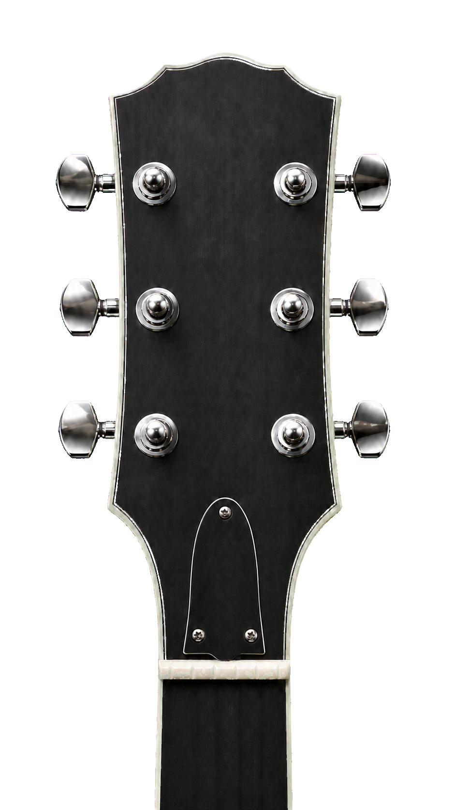

ギターチューナー
レギュラー
▼
—
—

E2
A2
D3
G3
B3
E4
raw Hz
—
clarity
—
RMS
—
補正
—
追跡
idle
入力加工
—
stable Hz
—
σ raw
—
σ stable
—
lag
—
¢/smp
—
SR
—
midi
—
cents
—
context
none
計測10秒（音声+ログ保存）
チューニング
×
設定
×
ヘッドタイプ
3対3
6連
左手モード
オフ
効果音
オン
基準ピッチ
−
440 Hz
＋